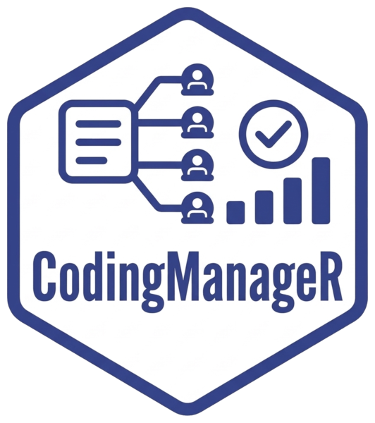

Create a Database Connection Pool or Direct DBI Connection
Source:R/db_connection.R
get_db_pool.RdCreates a thread-safe pool::dbPool (recommended for multi-user Shiny Server
deployments) or a direct DBIConnection targeting MySQL/MariaDB, with
optional fallback to a local SQLite database for single-user desktop sessions.
Arguments
- config
Optional named list with connection settings:
host,port,user,password,dbname,sqlite_path,minSize,maxSize, andidleTimeout. Missing entries fall back to environment variables (MYSQL_HOST,MYSQL_PORT,MYSQL_USER,MYSQL_PASSWORD,MYSQL_DBNAME), automatically loading an app-local.Renvironfile if required variables are not yet set.- fallback_to_sqlite
Logical; if
TRUE(default), falls back to a local SQLite database when no MySQL/MariaDB connection is configured or available.- force_pool
Logical; if
TRUE(default), wraps the connection in apool::dbPoolwhen thepoolpackage is available.
Value
A pool::dbPool or DBIConnection object.
Examples
if (FALSE) { # \dontrun{
pool_con <- get_db_pool(config = list(sqlite_path = ":memory:"))
close_db_pool(pool_con)
} # }